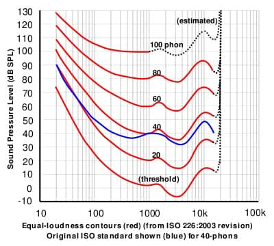

Yesterday, I was arguing with my coworker about our auditory system. His opinion was that frequency and loudness are the same. Of course they are not. For the starters, frequency is the physical aspect of sounds while loudness is our psychological experience. In detail, frequency (Hz) corresponds to the psychological experience of pitch, and amplitude (dB) results in our perception of loudness. Frequency represents the cycle of sound waves, and amplitude calculates the sound pressure formed by the molecules from the source.
His supporting idea was that as he spoke louder, everyone could hear, so there should be only one element in his voice. Everyone can hear him because loudness depends on both frequency and amplitude. At different levels of sound pressure (measured in decibels), humans perceive those different sounds as being equally loud depending on the sounds’ frequencies. The connection between different levels of frequency and amplitude required to perceive equal loudness is called equal-loudness contour (image below). As one element changes, the other one follows, making his voice “hearable”.
People who do not have a basic background in sensation often think that the frequency and the amplitude from the source to pitch and loudness perceived by the brain remain consistent. However, humans’ perception of stimuli differs significantly from the stimuli themselves. That difference happens thanks to the complex auditory process which people do not acknowledge because it does not require their mental effort to operate. Nevertheless, knowledge about how the brain makes people hear what they hear gives rise to the understanding of how auditory perception detects sound. In detail, according to the auditory response curve, people can perceive varied sound pressure with a range of frequencies as equally detectable (x). Sounds with the same amplitude but different levels of frequency may not sound equally loud to humans’ ears, while sounds with particular combinations of amplitude and frequency may sound equally loud. In this paper, researchers seek to understand two parts of the auditory curve, which are frequency and amplitude detection for a pure tone, and the interplay between frequency and loudness on the perception of sound.
In terms of pitch perception, several theories and models exist attempting to explain how the auditory systems convert compression waves into a pitch. Ears help people to group and ungroup sounds with little effort by two processes which are simultaneous grouping and sequential grouping so that we can differentiate sounds, know which one to focus on, and locate the source of sound (x). Researchers still cannot affirm which cues the brain uses to process sounds’ frequency into a pitch. Meanwhile, they suggest the three most common possibilities as place, time, and place-time theories. In terms of the place theory, the hair cells on the basilar membranes respond chronologically according to the frequency of the tone. For example, hair cells near the base of the cochlear respond maximally to high-frequency sound while hair cells near the apex of the cochlear respond maximally to low-frequency sound. That organization of hair cells represents tonotopic response believed to function accordingly along the auditory pathways to the auditory cortex in the brain. Regarding the temporal theory, for one cycle of the sinusoid wave, hair cells trigger auditory nerves to fire action potentials more at one point than at another. The time interval between pairs of actional potentials can denote the tone frequency. According to the place-time theory, the traveling wave in the fluid always poses at different phases with the wave on the basilar membrane, so the brain can calculate these phase differences to come out with the frequency of a tone (Schneider, 2021). Each theory has its evidence, but apparently, humans do not rely on only one theory to perceive pitch. For example, the place theory suggests that pitch discrimination performance should be constant at all frequency sounds as it relies on cochlear filtering in which each hair cell functions equally; however, human beings discriminate medium-frequency sounds (500-2000 Hz) better. Temporal coding seems to lose its effectiveness with sounds above 4000 Hz, but humans can still perceive the pitch of very high-frequency sounds, suggesting that humans may rely on place coding for perceiving high-frequency sounds, or temporal coding can perceive the pitch of sounds that have a much higher level of frequency than the finding so far.
One of the most evident reasons why what people perceive differs from the stimuli emerges in people’s perception of loudness. The sound pressure formed by the molecules from the source in the air will be reduced significantly in humans’ inner ears because of impedance mismatch. However, people still can detect sounds at low amplitude thanks to the structure of the middle ears that work as an amplifier to increase the sound pressure by about 30 decibels (Schneider, 2021). Therefore, what humans hear from the environment comes from what they think they hear. Humans perceive loudness by the number of hair cells activated (x). Lower sound pressure fires fewer hair cells on the basilar membrane than higher sound pressure (x). Loudness perception may seem easy to understand; however, when sounds come, the amplitude does not come alone but rather along with the frequency, context, and duration of the sound.
The auditory response curve comes from the idea that the loudness of the sound depends on its frequency and amplitude. The auditory response curve, also known as the equal-loudness contour, has its first complete set thanks to Fletcher and Munson. At different levels of sound pressure (measured in decibels), humans perceive those different sounds as being equally loud depending on the sounds’ frequencies. The connection between different levels of frequency and amplitude required to perceive equal loudness is called equal-loudness contour. However, recent studies show data with significant deviations from Fletcher and Munson curves as well as different classic curves (x). In detail, for 60 phons and above, Fletcher and Munson curves were lower than the current curves in low-frequency sounds (x) (x). At 4000 Hz, Zwicker curves differ from all recent curves. Therefore, Suzuki and Takeshima finalized an equation to point out the relationship between frequency and amplitude required for equal loudness.
